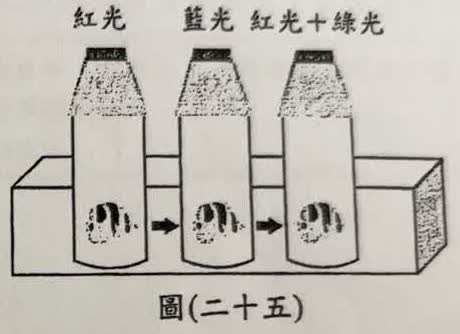
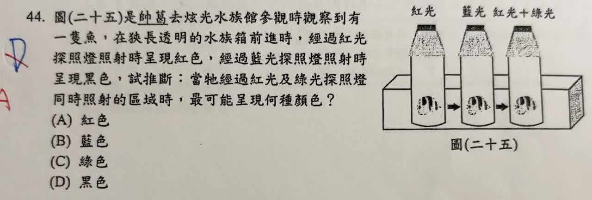

分享原卷｜第 44 題
完整原題

圖（二十五）是帥葛去炫光水族館參觀時觀察到有一隻魚，在狹長透明的水族箱前進時，經過紅光探照燈照射時呈現紅色，經過藍光探照燈照射時呈現黑色，試推斷：當牠經過紅光及綠光探照燈同時照射的區域時，最可能呈現何種顏色？
(A) 紅色
(B) 藍色
(C) 綠色
(D) 黑色
先想一想，再查看答案、解說與原圖
原卷作答：D（紅筆訂正A）
原卷預期答案：A（紅色）。魚對綠光的反射情形未交代，詳見下方說明。
逐項解析
| 選項與原句 | 判讀 | 句意與判斷理由 |
|---|---|---|
| (A) 紅色 | 應選 | 原卷預期A。若依出題者把魚視為反射紅光而吸收綠光的紅色物體模型，便呈紅色；但吸收綠光不是題幹已測得的條件。 |
| (B) 藍色 | 不選 | 新區域沒有藍光，而且魚在藍光下呈黑色，不能判為反射藍光而呈藍色。 |
| (C) 綠色 | 不選 | 魚已知能反射紅光，不能把仍存在的紅光忽略而直接斷言只呈綠色。 |
| (D) 黑色 | 不選 | 新區域仍有紅光，魚可反射紅光，不會僅因之前在藍光下呈黑色，就繼續呈黑色。 |
詳細說明與解題步驟
看見物體的顏色，要同時考慮「有哪些光照過來」與「物體能反射哪些光」。紅光照射時呈紅色，表示魚能反射紅光；藍光照射時呈黑色，表示它幾乎不反射藍光。
到了紅光＋綠光區，魚能反射的紅光仍然存在，所以不能延用上一區的黑色。依原卷紅筆及課堂將它當成紅色物體的預設模型，預期選A。
原題條件的限制：題目沒有測試綠光單獨照射，也沒有明說魚會吸收綠光。「能反射紅光」不等於「一定不能反射綠光」。若魚也能反射綠光，就可能因紅、綠光的反射比例而呈黃色等色調。因此此題保留預期A，但不把吸收綠光教成由已知條件必然推出的結論，此項已列入確認清單。
紅光與綠光混合可形成黃光，也不表示任何物體受照後都呈黃色；還要看物體是否把兩種光以適當比例反射進眼睛。作答時先找仍能反射的光，再判斷是否需要額外條件。
核對註記：原題、四個選項與作答附圖已核對；保留預期答案A，綠光反射條件不足已由使用者確認。
原圖（僅本題）
